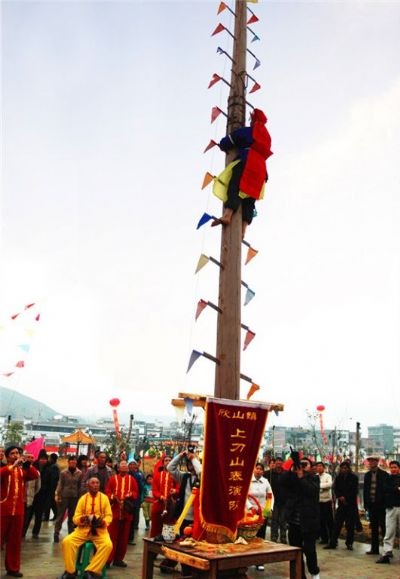
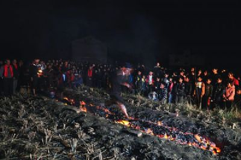
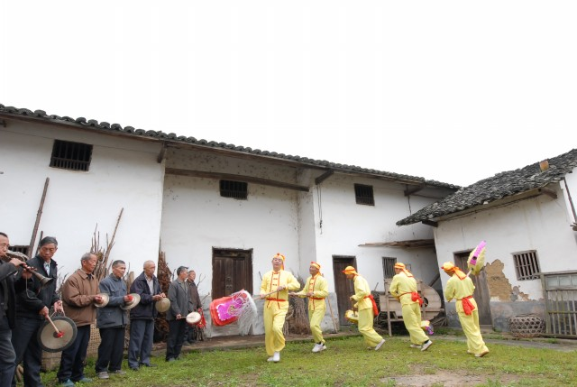

上刀山
“上刀山”是我国传统宗教文化，源于道教正一派中的混元派红头道士（“阳师”）的一种祭祀仪式，一般在民间庙堂、宫观表演的一项绝活。用来祭祀神灵、驱邪镇煞，祈保国泰民安、风调雨顺。“上刀山”在明朝时由雄十四郎、雄十四娘传入安远，在清朝和民国时最为盛行。“上刀山”表演者叫“红头道士”，也称“阳师”，不仅流传于国内，东南亚许多国家也很盛行。
安远欣山“上刀山”，吸收了殷周时代的巫祝祭祀鬼神、先秦的方仙之说，又吸纳了春秋时代的阴阳五行家、道家、儒家等学派思想，逐渐构成了以鬼神崇拜、神仙方术与古代唯心主义哲学思想相结合的道教思想，东汉末年形成有组织的宗教，尊老子为教主，以《道德经》为主要经典。
上刀山在明朝时由雄十四郎、雄十四娘传入安远，在清朝和民国时最为盛行。当时由于科学欠发达，老百姓经常遭受瘟疫疾病、蝗虫损禾、干旱洪水、庄稼欠丰等各种灾害，百姓苦不堪言。所以安远各地的民间庙堂由庙会牵头，百姓募捐，举行三天四夜、五天六夜、七天八夜不等的斋蘸法事，最长的叫“打万缘蘸”，时间七七四十九天，每天中午进行“上刀山”表演，表演时祈求风调雨顺、驱瘟断煞、五谷丰登、国泰民安。表达了广大人民群众对幸福生活的美好愿望。“上刀山”是斋蘸法事的热潮，最精彩的时刻。直到“文革”时期“上刀山”1禁演，红头道士（“阳师”）也受到很大影响。党的十一届三中全会后经国务院宗教事务局批准，恢复民族宗教，安远“上刀山”表演再次在各地民间庙堂出现。
下火海
“过火炼”又称“下火海”，是我国传统道教文化的一项绝活，源于道教正一派中的混元派红头道士（“阳师”）的一种祭祀仪式，一般在民间的庙堂、宫观进行表演，用来祭祀神灵、驱邪镇煞，祈保国泰民安、风调雨顺。它既吸收了殷周时代的巫祝祭祀鬼神、先秦的方仙之说，又吸纳了春秋时代的阴阳五行家、道家、儒家等学派思想，是道教混元派文化遗产的结晶，由于贴近民间群众生活，不仅流传于国内，在东南亚很多国家都盛行。
“过火炼”是由师傅一人或师徒多人，甚至信教群众代表共同参与表演的一项绝活。表演者也叫“红头道士”（“阳师”），表演时赤脚从长十二米，烧得通红的“火炼”上走过，脚底板却不会烫伤。更为神奇的是，在“红头道士”的带领下，一般的信教群众也可赤脚走过通红的“火炼”而安然无恙，带着强烈的神秘色彩。
瑞龙
瑞龙又称纸龙、五股龙，是江西省安远县中部地区所特有的传统民间舞蹈，是一种头、腰、尾五节互不相连的民间龙灯，瑞龙头、尾各一节，腰三节。
瑞龙一般在春节期间进行表演，表演前要进行传统的祭龙仪式，村民们手执龙灯，敲锣打鼓来到河边摆上供品、点燃香烛、燃放鞭炮、祭拜龙神，进行“拜水开光”仪式，然后到各个村庄进行表演。它的舞蹈动作较简单，舞步以小碎步和跑跳步为主，摆出“天下太平”字样。舞龙的动作内容包括东君赞语、盖水波浪、舞水爪钩、织竹壁、结字、走圆场等几个环节组成。
据安远县欣山镇修田村民间老艺人杜利民（1911年生）介绍说：“瑞龙在当地流传了十一代，最迟在1800年左右就产生了。”据1993年版《安远县志》：“安远城南有一座九龙山，山高水清，云雾缭绕，盛产甘美清香的九龙茶。九龙山原叫九顶山。相传，古时九顶山下有个穷苦的后生，常独自一人上山砍柴。一天，他来到山中，忽见山顶五彩缤纷，祥云缭绕，九条金龙从云中飞出，时而在空中飞舞，时而在潭中戏耍，时隐时现，百态千姿。正当他看得入迷时，一阵山风吹来，云消雾散，九条金龙无影无踪，而展现在眼前的却是九棵翠绿的茶树，迎着阳光随风摇曳。后生感到奇怪，回家后便将金龙变茶树之事告诉乡邻。大家听说后，纷纷上山观看，只见九株茶树亭亭玉立，绿光闪烁。众人便采摘茶叶，回去精心炒制。茶叶芳香扑鼻，闻之欲醉；茶水甘美清香，醇厚无比。于是，人们纷纷相约上山开荒种茶。茶农把九顶山改名九龙山，将茶称之为九龙茶，将潭称之为九龙潭。一传十，十传百，九龙茶的奇闻传到皇帝耳朵里，皇帝立即传旨赣南道台，选九龙茶进贡朝廷。从此，九龙山的传说一直流传到现在。”清代，安远人依照此传说编创了瑞龙这种民间舞蹈表演节目，并不断演绎充实，寓意了龙来生瑞、瑞到增福、瑞气盈门、五福归堂等含义。